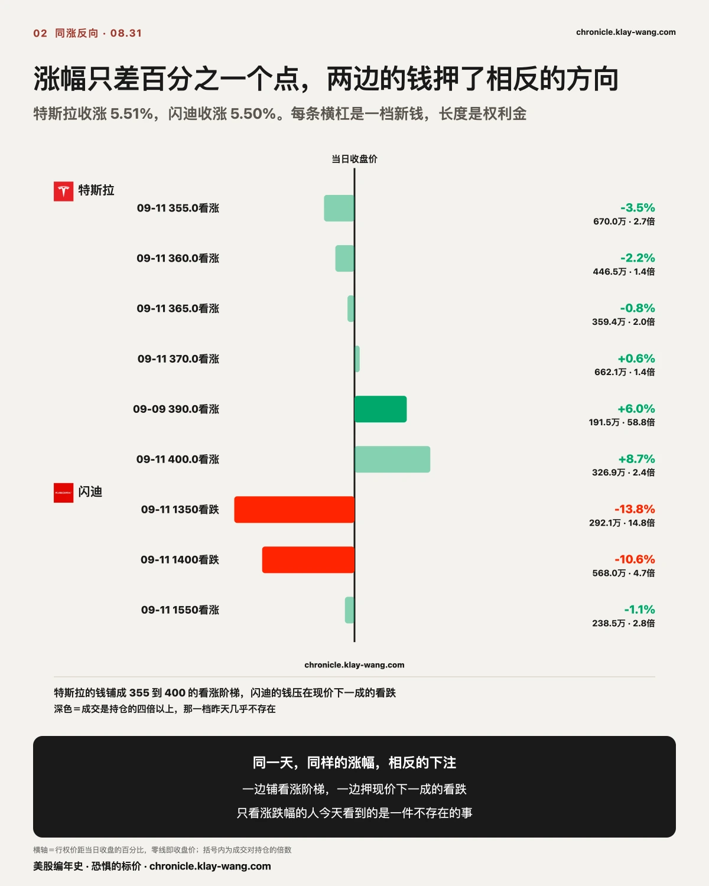
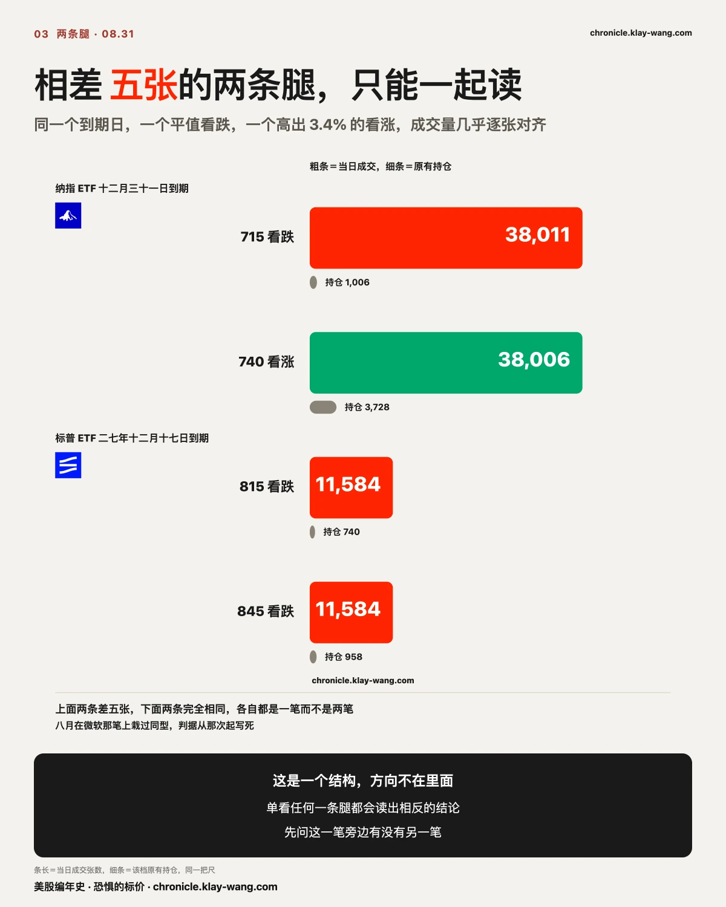
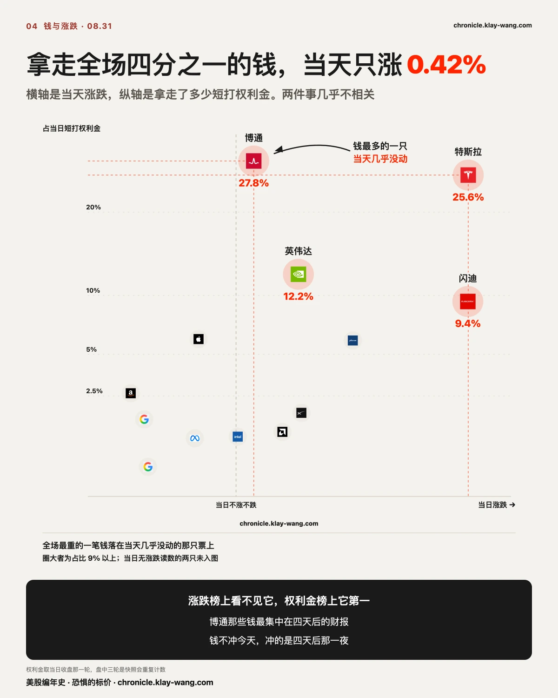
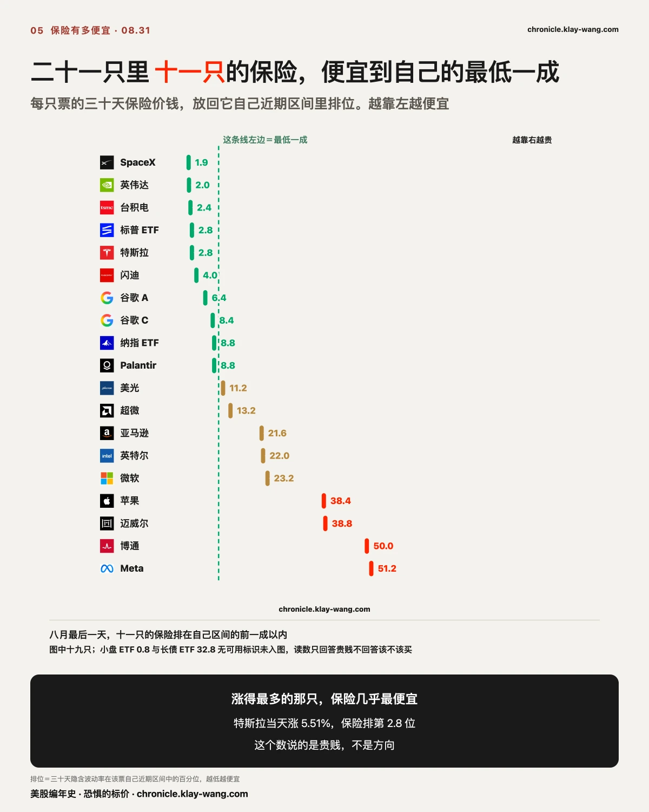
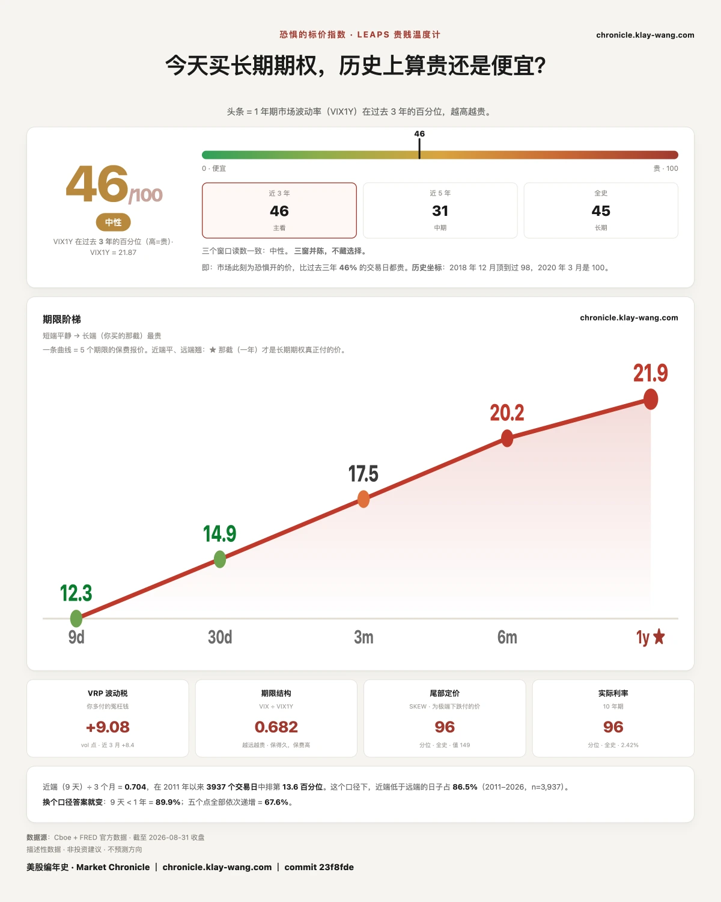

特斯拉的涨，和闪迪的涨，不是同一种涨？ · 8.31-9.4
三行干货
- 今天的钱在三个期限上给出了三个方向。十一天以内那一层，看跌对看涨 0.25，二十六个交易日里第 8 位；十八到八十一天那一层 1.18，三十六个交易日里第 86 位；九十天以上那一层 0.66，回到常态。两个极端坐在同一天的两个抽屉里。
- 特斯拉收涨 5.51%，闪迪收涨 5.50%，涨幅只差百分之一个点。特斯拉的新钱铺成一条 355 到 400 的看涨阶梯，闪迪的新钱压在低于现价一成的看跌上。涨幅这个数字今天什么也没告诉你。
- 全场最重的短打权利金落在博通，占 27.8%，而它当天只涨 0.42%。钱不冲今天，冲的是四天后那一夜。
近端押涨押到第 8 位，中段押跌押到第 86 位，两个极端同一天
我们把当天筛出来的异常成交按到期远近分三层，每层各算看跌张数除以看涨张数，再跟它自己过去几十个交易日比。
| 到期 | 今天 | 中位数 | 排第几 |
|---|---|---|---|
| 十一天以内 | 0.25 | 0.52 | 二十六个交易日第 8 位 |
| 十八到八十一天 | 1.18 | 0.79 | 三十六个交易日第 86 位 |
| 九十天以上 | 0.66 | 0.86 | 三十六个交易日第 33 位 |
近端那个 0.25 是最近六个交易日里最低的，前五天分别是 0.50、0.44、0.55、0.41、0.59。中段那个 1.18 是最近六天唯一一次站上 1，前五天是 0.67、0.71、0.65、0.62、0.73。
越远越谨慎讲得通，越近越谨慎也讲得通。两头押涨、中间押跌讲不通，除非承认这是三批钱在做三件事。
先看十一天以内。 权利金最集中的三只是今天涨得最凶的两只，加上一只四天后开财报的票。行权价几乎全部贴着或高于现价。这一层买的是眼前这几天。
再看十八到八十一天。 这一层覆盖的正好是整个九月，而九月这张日历排得很密：
- 09.01 职位空缺与制造业采购经理人
- 09.02 民间就业
- 09.03 企业计划裁员、初请失业金、非制造业采购经理人
- 09.04 非农就业
- 09.16 到 09.17 利率决议
- 09.18 规模换档日，到期仓位成规模移动
光第一周就有五个就业口径的数，周五非农收口。 中旬那次决议之前只剩这一个非农和一个物价数据，市场现在把九月加息定价在五成上下。
今天这一层第一次让买保护的张数超过买上涨的张数，而这件事最近六天没发生过。买这一层的人不需要知道九月往哪走，只需要知道九月有几天会有答案揭晓。
最后看九十天以上。 成交量的一半以上落在指数基金和债券基金上，个股只剩零星几档。纳指 ETF 占 16.0%，标普 ETF 14.6%，长期国债 ETF 13.5%，前五名里四个不是个股。这一层在铺底仓，不在下判断。
三层放一起，形状就出来了：近端那批人要的是今天这根阳线的延续，中段那批人要的是九月那几个日子的保护，远端那批人只是在摆自己的仓位。
把三层混成一个数字去问市场看多还是看空，问题从一开始就问错了。
这句话可以拿去吵，所以把推翻它的条件写上：如果明天近端回到中位数附近，而中段仍然站在 1 以上，说明中段那批钱不是冲着九月的日历来的，这一段要收回，我们去找真正的来由。
顺带记一笔。九十天以上那一层五个交易日前是 2.14，我们当时写过那是二十七个交易日里第 96 位。今天 0.66。那一层的紧张被拆掉只用了五天，而拆它的过程里没有出现任何一件对应的坏新闻。

特斯拉的涨，和闪迪的涨，不是同一种涨
特斯拉收 367.95，涨 5.51%。闪迪收 1566.70，涨 5.50%。按涨跌榜的读法，今天它们是同一件事。
把两边的钱拆开，它们是两件事。把两边上涨的来由拆开，它们连上涨都不是同一种上涨。
先说闪迪那一涨是怎么来的。 明晟08.12公布的季度调整里，闪迪被纳入全球指数，
所有调整在08.31收盘后正式生效。它今天全天成交 353.92 亿美元，全场第一，
涨幅集中在尾盘。那是被动资金必须在收盘那一刻建仓的买盘，不是有人重新给它估了一次值。
再看它的期权。 收盘那一轮五笔，看涨只占 22%。最重的两笔都是看跌，都在09.11：
1400 那一档权利金约 568 万美元，行权价低于现价 10.6%；1350 那一档约 292 万美元，
成交是持仓的 14.8 倍。唯一一笔看涨是 1550，行权价还在现价之下。
一次机械买盘把价格推上去，紧接着有人在下方十个百分点铺保护。 这两件事放在一起是自洽的：
纳入生效之后那批买盘就消失了，而价格还挂在被它推上去的位置。
特斯拉那一涨是另一回事。 它今天的新闻有三条：港澳上线简配版 Model 3，香港起售 20.5 万港元；
本周在奥斯汀办邀请制活动正式推出无人出租车；此前08.20内华达州克拉克县已批准其在
拉斯维加斯运营无人驾驶出租车、上限 5,000 辆。
它的钱也押在这上面。 收盘那一轮七笔，看涨占权利金的 88.7%，几乎全部压在09.11，
行权价从 355 铺到 400，下沿在现价之下 3.5%，上沿在现价之上 8.7%。阶梯之外还有一档单独的：
09.09到期、行权价 390 的看涨，昨天全市场持仓 133 张，今天成交 7,817 张，
是持仓的 58.8 倍，行权价高出收盘 6.0%。它盘中一路加上去，中午 6,404 张，收盘 7,817 张。
一边的钱在赌一个还没开的发布会，另一边的钱在防一次已经结束的买盘。
涨跌榜把它们排在相邻两行，权利金表把它们拆成两个方向。拆到来由这一层，
它们从一开始就不该被放进同一个句子里。只看涨跌幅的人，今天看到的是一件根本不存在的事。

相差五张的两条腿，只能一起读
九十天以上那一层里，有两条腿必须放在一起看：
纳指 ETF 12.31到期 715 看跌 成交 38,011 持仓 1,006
纳指 ETF 12.31到期 740 看涨 成交 38,006 持仓 3,728
两条腿只差五张。同一个到期日，一个平值看跌，一个高出 3.4% 的看涨，成交量几乎逐张对齐，而且双双远远超过原有持仓。
单独看那 38,011 张看跌，会读成有人在押大跌。单独看那 38,006 张看涨，会读成有人在押大涨。两条腿一起看，它是一个把上下都框住的结构，方向不在里面。
八月我们在微软那笔上栽过同型的跟头：一亿多的价内看涨被读成方向下注，实际是冲着股息去的。从那次起判据就写死了：先问这一笔旁边有没有另一笔。
同族还有一处。标普 ETF 2027.12.17到期的 815 与 845 两档看跌，成交量完全相同，各 11,584 张，两档都在现价之上。这两处我们只报结构不报方向，深度价内加超长天期的组合多半是融资或者合成头寸。

博通拿走全场四分之一的钱，而它当天几乎没动
今天短打层的权利金合计约 1.17 亿美元。博通拿走 0.33 亿，占 27.8%，全场第一，当天涨 0.42%。特斯拉第二，0.30 亿占 25.6%，当天涨 5.51%。
涨跌榜上看不见博通，权利金榜上它是第一。
它那 43 笔最集中在09.04到期，只剩四天，那一周是它的财报周。它的三十天隐含波动率排在自己区间第 50 位，是二十一只里最贵的两只之一，另一只是 Meta。
二十一只里有十九只的保险比它便宜。买它的人付的是全场最高的价钱，买的是四天后那一夜。

收益率冲到二五年一月以来最高的那天，短端在反应，长端在无视
八月最后一天，二十一只里有 十一只 的三十天隐含波动率排在自己区间的前 10 个百分点以内：
罗素小盘 0.8、SpaceX 1.9、英伟达 2.0、台积电 2.4、标普 ETF 2.8、特斯拉 2.8、闪迪 4.0、
谷歌 A 6.4、谷歌 C 8.4、纳指 ETF 8.8、Palantir 8.8。
特斯拉今天涨了 5.51%，而它未来三十天的保险排在自己区间第 2.8 位。涨得最多的那一只，保险几乎最便宜。
同一天，十年期美国国债收益率升到 4.75%，是2025 年 1 月以来最高；三十年期短线走高 4 个基点，报 5.25%。
这一天四把量恐惧的尺子分成了两派。
| 08.28 | 08.31 | |
|---|---|---|
| 股市的恐惧价格 | 14.43 | 14.92 |
| 债市的恐惧价格 | 70.97 | 75.32 |
| 一年期的恐惧价格 | 22.16 | 21.87 |
| 恐惧的标价读数 | 50.9 | 45.5 |
债市那把尺一天跳 4.35，是八月单日第三大的一次，它在近三年里的排位从 14.8 抬到 22.1。
股市那把也涨了 0.49。而一年期那一层反而落到 21.87，读数落到 45.5，两个都是全月最低。
短端在反应，长端在无视。
同一天还有两条新闻给了这个形状一个来由。一是总统当天在白宫说可能打击伊朗，
另有官员透露对霍尔木兹海峡的有限打击方案可能获批；二是他在同一场采访里说
目前利率过高，而市场那一刻正把九月加息定价在五成上下。
一个带日期的事件会推高近端的保险，一个方向不明的政策争论不会推高一年期的保险。
今天这两件事各自把价签贴到了对应的期限上。

恐惧的标价：月末收在全月最低
恐惧的标价指数（Fear-Price Index）· 2026-08-31 · 读数 45.5/100：一年期波动率 VIX1Y 为 21.87，
处于近三年第 45.5 百分位，高即贵。八月它从月初的 68.1 一路走到 45.5，月末就是全月最低。
逐日台账与口径 → chronicle.klay-wang.com · 转载注明：恐惧的标价指数 · Market Chronicle

本站不提供投资建议，不预测方向，不做择时。